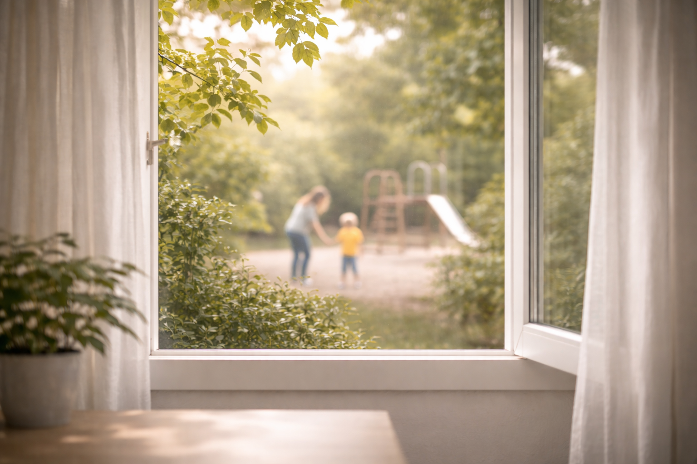

Psycholožka ve zdravotnictví, frekventantka výcviku v kognitivně-behaviorální terapii, klinická hypnoterapeutka.
Nabízím psychologické poradenství a terapii pro dospívající a dospělé, kteří nechtějí být na své cestě sami.
Psychologie pro mě od počátku nebyla pouze oborem, ale především cestou k lidským příběhům – k porozumění tomu, co lidé prožívají, a k možnosti být jim průvodcem v náročných obdobích jejich života.
Jako psycholožka se ve své práci se snažím propojovat evidence-based přístup s lidskostí, respektem a vytvářením bezpečného prostoru pro sdílení. Pracuji s jednotlivci všech věkových skupin, a to i v online formě. Nejčastěji se setkávám s tématy úzkostí, depresivních obtíží, vztahových problémů, zvládání stresu, syndromu vyhoření a traumatických zkušeností; obrátit se na mě lze samozřejmě i s jinými obtížemi.
Mým hlavním terapeutickým směrem je kognitivně-behaviorální terapie (KBT), kterou dle potřeb a preferencí klienta doplňuji o přístup EMDR a klinické hypnózy. Terapii nevnímám jako univerzální postup, ale jako společnou cestu – snažím se ji přizpůsobovat konkrétnímu člověku, jeho obtížím i možnostem, s respektem k jeho jedinečnému životnímu příběhu.
Je pro mě důležité, aby se klienti cítili pochopeně a v bezpečí, a zároveň nacházeli motivaci ke změně, osobnímu růstu i uvědomění vlastní možnosti ovlivňovat svůj život. Pracuji v souladu s psychologickým etickým kodexem, zachovávám mlčenlivost. Své odborné dovednosti dále rozvíjím prostřednictvím supervize, kurzů a účasti na odborných přednáškách.
S čím a jak mohu pomoci?
✓Úzkostné symptomy
✓Depresivní symptomy
✓Zvládání stresu
✓OCD
✓Syndrom vyhoření
✓Traumatické zkušenosti
✓Vztahová problematika
✓Problémy se spánkem
✓Životní krize
✓Nízká sebedůvěra
✓Fobie (klaustrofobie, agorafobie, sociální fobie)
✓Panické ataky
✓a další…
Komu můžu pomoci?
Pracuji s dospívajícími (od 15 let), dospělými a seniory
Jak pracuji?
Aktuálně nabízím poradenství a terapii formou online konzultace. Online terapie nabízí možnost terapeutické spolupráce i na dálku, v prostředí, které je klientovi blízké a bezpečné, při zachování odborných standardů terapie.
Formy terapie
KBT terapie
Pokud chcete rozumět svým myšlenkám, prožívání a chování a mít konkrétní nástroje, které vám pomohou v běžných situacích.

EMDR terapie
Pokud Vás trápí silné vzpomínky, traumatické události, úzkost, pocity nebo tělesné reakce, které se nedaří “rozumově” zpracovat.
Hypnoterapie
Pokud chcete pracovat s úzkostí, stresem, emocemi, tělesným napětím a změnou automatických reakcí v bezpečném a uvolněném stavu.
Krizová intervence
Pokud nyní řešíte akutní těžkou situaci a potřebujete rychlou a srozumitelnou oporu.
Terapie v přírodě
Pokud se cítíte lépe v pohybu, na čerstvém vzduchu nebo vám prostředí místnosti nevyhovuje.
Časté dotazy
Objednat se můžete prostřednictvím online objednávkového systému nebo e-mailem. V e-mailu můžete krátce popsat, co vás trápí a s čím do terapie přicházíte. Pokud je pro vás obtížné věci slovně pojmenovat, nemusíte se obávat – vše potřebné probereme na prvním sezení.
Do 48 hodin od odeslání e-mailu nebo objednání přes web obdržíte odpověď s návrhem termínu a základními informacemi k sezení. Pokud si nejste jisti, zda je terapie pro vás vhodná, můžete mě před objednáním kontaktovat s dotazem.
První setkání slouží především k vzájemnému seznámení a k porozumění tomu, s čím do terapie přicházíte. Společně probereme vaše aktuální obtíže, očekávání a cíle terapie. Zároveň budete mít prostor zeptat se na vše, co vás k terapii zajímá.
Vysvětlím vám, jakým způsobem pracuji, a domluvíme se na podmínkách spolupráce. Na závěr sezení se společně ohlédneme za tím, jaké pro vás setkání bylo, a probereme další možný postup.
V dalších sezeních se zaměřujeme na témata, která jsou pro vás aktuálně důležitá. Někdy jsou terapeutické cíle jasné hned od začátku, jindy se vyjasňují postupně – obě varianty jsou v pořádku.
V průběhu sezení pracujeme s myšlenkami, emocemi i chováním v každodenních situacích a hledáme cesty, které mohou vést ke změně obtíží a ke změně v běžném fungování. Tempo i zaměření terapie vždy přizpůsobuji vašim potřebám a možnostem. Na konci sezení se společně krátce zastavujeme u toho, jak pro vás setkání bylo, aby bylo možné terapii dále přizpůsobovat vám na míru.
Jedno sezení obvykle trvá 50 minut. Frekvence setkávání bývá nejčastěji jednou týdně nebo jednou za 14 dní, podle domluvy a časových kapacit terapeuta i klienta a charakteru řešených obtíží. Na možnostech se společně domluvíme v průběhu prvního setkání a je možné je upravovat i v průběhu terapeutických sezení.
Online terapie probíhá formou zabezpečeného videohovoru a je plnohodnotnou alternativou osobního setkání. Je vhodná zejména v situacích, kdy není možné docházet osobně nebo pokud vám tento způsob kontaktu více vyhovuje.
Informace sdílené v terapii podléhají mlčenlivosti a jsou zpracovávány v souladu s etickými zásadami psychologické profese. Bezpečný a respektující přístup je základním předpokladem terapeutické spolupráce.
Pokud potřebujete sezení zrušit nebo přesunout, dejte mi prosím vědět co nejdříve. Při zrušení méně než 24 hodin před domluveným termínem je účtována plná cena sezení. Podrobnosti jsou uvedeny ve storno podmínkách.
Pochybnosti jsou běžnou součástí terapeutického procesu. Je v pořádku o nich mluvit přímo v terapii. Společně se můžeme zastavit u toho, co vám terapie přináší, a rozhodnout, co dál — pokračovat nebo práci upravit.
Ano. Terapie je dobrovolná a můžete ji kdykoliv ukončit. Vhodné je o ukončení mluvit otevřeně, ideálně s prostorem pro společné uzavření spolupráce.
Nemám uzavřenou smlouvu se zdravotními pojišťovnami; sezení si klient hradí sám.
To je zcela v pořádku. Společně se na prvním setkání podíváme na to, co vás přivádí, i když to zatím neumíte přesně pojmenovat. Terapie nemusí začínat jasným cílem – ten se často vyjasňuje až postupně.
Ceník
Individuální online konzultace
50 minut
1 000 Kč
Individuální online konzultace
90 minut
1 500 Kč
Individuální online konzultace - víkend
+ 30%
Terapie v přírodě
90 minut
1 600 Kč
Vypracování zprávy z terapie
400 Kč
Poskytované služby nejsou hrazeny ze zdravotního pojištění.
Platba za sezení probíhá předem, nejpozději 24 hodin před domluveným termínem. Při zrušení sezení méně než 24 hodin předem je účtována plná cena sezení. Platební údaje jsou zasílány e-mailem po potvrzení termínu. Děkuji za respektování těchto podmínek, které umožňují plynulé fungování praxe.
Kontakt
Pokud máte zájem o spolupráci nebo se chcete objednat, neváhejte mě kontaktovat.
Kognitivně-behaviorální terapie (KBT) je psychoterapeutický směr, který pomáhá lidem lépe porozumět tomu, jak jejich myšlenky, emoce a chování vzájemně souvisejí. KBT vychází z přesvědčení, že to není samotná situace, která určuje, jak se cítíme, ale způsob, jakým si ji vykládáme. Když se naučíme pracovat s tímto “vnitřním komentářem”, můžeme začít měnit i své prožívání a reakce. KBT je účinná u široké škály potíží. Terapeut a klient tu fungují jako tým, společně hledají další strategie, jak životní těžkosti zvládat.
Jak KBT probíhá?
KBT je strukturovaná, praktická a zaměřená na řešení konkrétních potíží.
Terapii obvykle tvoří:
mapování potíží a vysvětlení, co je udržuje
stanovení cílů, na kterých chcete pracovat
praktická cvičení, která pomáhají měnit zažité vzorce
krátké domácí úkoly, které zajišťují, že změny se promítnou do běžného života
průběžné vyhodnocování, zda společná práce funguje
V čem se KBT liší od jiných terapií?
je praktická a přehledná, s jasnými kroky a cíli
soustředí se na současné potíže, ale s ohledem na to, co je v minulosti formovalo
nabízí konkrétní nástroje, které si klient může postupně osvojit a používat samostatně
klade důraz na aktivní zapojení klienta i mimo terapeutická sezení
Co si z KBT odnesete?
Mnoho klientů po ukončení terapie říká, že získali:
lepší porozumění tomu, proč reagují určitým způsobem,
dovednosti, jak uklidnit mysl i tělo,
větší jistotu v řešení náročných situací,
pocit kontroly a schopnost ovlivnit své prožívání,
konkrétní strategie, které mohou používat po celý život.
EMDR (Eye Movement Desensitization and Reprocessing) je evidence‑based psychoterapeutická metoda, která pomáhá zpracovat psychicky náročné nebo traumatické zážitky. Pracuje s přirozenou schopností mozku integrovat informace a hojit se, podobně jako tělo léčí fyzická zranění.
Když je zážitek příliš silný nebo nečekaný, může zůstat „zamrzlý“ v nervovém systému a vyvolávat nepříjemné reakce, jako jsou úzkosti, flashbacky, napětí, pocity ohrožení nebo silné emoce. EMDR pomáhá tento materiál bezpečně zpracovat a uložit tam, kam patří — do minulosti. Terapie EMDR je vědecky ověřená a doporučená mnohými mezinárodními organizacemi pro léčbu posttraumatické stresové poruchy (např. Světová zdravotnická organizace, 2013).
Jak EMDR funguje?
Terapie využívá tzv. bilaterální stimulaci — nejčastěji sledování pohybů terapeutovy ruky očima, někdy i zvukové či vibrační podněty střídající se mezi pravou a levou stranou těla. Během stimulace klient postupně prochází vzpomínkami, tělesnými pocity a myšlenkami, které se k tématu vážou. Mozek tak dostává možnost informace přerámovat a uklidnit. Proces nevyžaduje, aby klient detailně popisoval trauma; účelem není vyprávění, ale vnitřní zpracování.
S čím EMDR pomáhá?
posttraumatické stresové poruchy (PTSD),
následky jednorázových i dlouhodobých traumat,
úzkosti, panické stavy,
psychosomatické potíže,
zážitky z dětství, které stále ovlivňují přítomnost,
komplikovaný smutek nebo šokové události.
Proč EMDR funguje?
EMDR využívá to, co mozek umí přirozeně v REM spánku — zpracovávat zážitky. Bilaterální stimulace tento proces podporuje a umožňuje, aby bolestivá vzpomínka ztratila emoční náboj, ale zůstala jako běžná část životní historie.
Co si klienti z EMDR odnášejí?
úlevu od intenzivních emocí,
lepší zvládání stresu,
pocit bezpečí a kontroly,
schopnost nahlížet na minulost s větším odstupem.
Hypnoterapie je psychoterapeutická metoda, která využívá hypnotický stav k léčebným a terapeutickým účelům. Hypnóza je zde chápána jako změněný stav vědomí, ve kterém je pozornost selektivně zúžená — člověk se méně soustředí na vnější podněty a více na své vnitřní prožívání, představy a tělesné pocity. V tomto stavu může být mysl otevřenější terapeutické práci, změně zažitých vzorců a zpracování obtížných emocí. Klient přitom neztrácí kontrolu, zůstává po celou dobu při vědomí a může kdykoliv proces přerušit.
Hypnoterapie pracuje se stavem zvýšené sugestibility, který umožňuje jemnější a přímější přístup k emočním a tělesným reakcím, jež se v běžném stavu vědomí někdy udržují automaticky a mimo vědomou kontrolu.
Podstatnou součástí hypnotického procesu je relaxace, která podporuje zklidnění nervového systému a vytváří prostor pro terapeutickou změnu. Hypnózu využívám hlavně jako součást a doplněk klasické psychoterapie.
S čím může hypnoterapie pomoci?
Hypnoterapie může být užitečná zejména při:
úzkostech a chronickém stresu,
psychosomatických obtížích,
poruchách spánku,
práci s emocemi (strach, napětí, stud, vina),
nízkém sebevědomí a vnitřním kritickém hlasu,
změně návyků a automatických reakcí,
tělesném napětí a přetrvávajících somatických potížích.
Jak hypnoterapie probíhá?
Hypnoterapie je vždy dobrovolná a probíhá pouze tehdy, pokud je pro klienta srozumitelná a dává mu smysl.
Sezení obvykle zahrnuje:
úvodní rozhovor a vymezení terapeutického cíle,
navození hypnotického stavu,
terapeutickou práci s představami, emocemi nebo tělesným prožitkem,
postupný návrat do běžného stavu vědomí,
společné zpracování zkušenosti.
Co si klienti z hypnoterapie často odnášejí?
hlubší pocit klidu a uvolnění,
lepší kontakt s tělem a emocemi,
snížení vnitřního napětí,
nový pohled na zažité vzorce,
zkušenost, že změna může probíhat jemně a postupně.
Krizová intervence je krátkodobá psychologická pomoc určená pro situace, kdy je člověk náhle zahlcen emocemi, stresem nebo životní událostí, kterou aktuálně nezvládá. Krize může přijít nečekaně – a není známkou slabosti. Je to signál, že je toho na vás v danou chvíli příliš. Cílem krizové intervence není „vyřešit celý život“, ale pomoci vám stabilizovat se, zorientovat se v situaci a zvládnout nejbližší období bezpečně.
Kdy může být krizová intervence vhodná?
Krizová intervence může pomoci například při:
náhlém zhoršení psychického stavu,
rozchodu, ztrátě, úmrtí blízkého,
akutním stresu, vyčerpání nebo kolapsu,
šokové či traumatické události,
pocitu, že „už toho je moc“,
myšlenkách na sebepoškození nebo bezvýchodnost (bezprostřední ohrožení vždy řešíme ve spolupráci s další pomocí).
Jak krizová intervence probíhá?
Krizová intervence je praktická, podpůrná a zaměřená na přítomnost. Společně se soustředíme na to, co se děje teď a co vám může pomoci situaci zvládnout krok po kroku.
Součástí může být:
bezpečné zastavení a zklidnění,
pojmenování toho, co se děje a proč je to tak náročné,
hledání okamžitých opor a zdrojů,
práce s emocemi a tělesným napětím,
vytvoření krátkého plánu pro nejbližší dny,
rozhodnutí, zda a jak pokračovat dál (např. navázání na terapii).
Co si můžete z krizové intervence odnést?
úlevu od akutního napětí,
pocit, že v tom nejste sami,
lepší orientaci v tom, co se děje,
konkrétní kroky, jak zvládnout nejbližší období,
naději, že situace je řešitelná – i když teď působí zahlcujícím dojmem.
Terapie v přírodě je forma psychologické práce, která probíhá venku – v přirozeném prostředí, například v parku, lese nebo klidné krajině. Spojuje terapeutický rozhovor s léčivým účinkem pohybu, čerstvého vzduchu a kontaktem s přírodou.
Příroda sama o sobě podporuje zklidnění nervového systému, snižuje napětí a pomáhá vytvářet odstup od zahlcujících myšlenek. Pro mnoho lidí je takové prostředí méně svazující než terapeutická místnost a umožňuje mluvit otevřeněji a přirozeněji.
Pro koho může být terapie v přírodě vhodná?
Terapie v přírodě může být dobrou volbou, pokud:
se cítíte přetížení, vyčerpaní nebo „odpojení od sebe“,
je pro vás náročné dlouho sedět a mluvit v uzavřeném prostoru,
řešíte stres, úzkost, smutek nebo životní změny,
potřebujete zpomalit a znovu se nadechnout,
vám vyhovuje přemýšlet při chůzi,
hledáte jemnější a méně formální formu terapie.
Jak terapie v přírodě probíhá?
Obvykle zahrnuje:
krátké naladění a ukotvení na začátku,
terapeutický rozhovor během pomalé chůze nebo zastavení,
práci s tím, co se objevuje v myšlenkách, emocích i těle,
využití okolního prostředí jako podpory (např. metafory, všímavost),
závěrečné shrnutí a uzavření setkání.
Co si z ní můžete odnést?
pocit většího klidu a ukotvení,
snížení napětí v těle,
jasnější myšlenky a nadhled,
hlubší kontakt se sebou a svými potřebami,
zkušenost, že změna může vznikat jemně a postupně.
Vystudovala jsem jednooborovou psychologii na Univerzitě Palackého v Olomouci. Aktuálně pracuji jako psycholog ve zdravotnictví a jsem zařazena ve specializačním vzdělávání v oboru klinická psychologie. Současně jsem frekventantkou výcviku v kognitivně‑behaviorální psychoterapii pod Mezinárodním institutem KBT Oddysea a výcviku v EMDR. Absolvovala jsem kurz v klinické hypnóze.
Podrobný přehled mého vzdělání, absolvovaných výcviků a kurzů je uveden níže.
Vzdělání
Univerzita Palackého v Olomouci, Filozofická fakulta Psychologie, Bakalářský titul (2016–2019)
Univerzita Palackého v Olomouci, Filozofická fakulta Psychologie, Magisterský titul (2019–2022)
Univerzita Hradec Králové, Filozofická fakulta Historické vědy (specializace archivnictví), Bakalářský titul (2020–2024)
Institut postgraduálního vzdělávání ve zdravotnictví Klinická psychologie (09/2022 – dosud)
Institut postgraduálního vzdělávání ve zdravotnictví Psychoterapie (09/2025 – dosud)
Akreditované kurzy a výcviky
Psychoterapeutický výcvik v kognitivně‑behaviorální terapii Mezinárodní institut KBT Oddysea, 02/2023–dosud
Výcvik v metodě EMDR Český institut pro psychotraumatologii a EMDR, z.s., 09/2025–dosud
Kroměřížský kurz hypnózy 2 Česká psychiatrická společnost J.E. Purkyně, Vydáno 09/2025, ID pověření akreditace: AKP ČR/ZL/ŠA/004/2025
Certifikovaný kurz Wechslerovy škály Institut klinické psychologie z.s.
Kurz Vývojová psychopatologie I–IV Institut klinické psychologie z.s., Vydáno 10/2025
Základní kurz v Rorschachově metodě Mgr. Michal Pernička, Ph.D., Vydáno 10/2024, č.j. MZDR 1592/2021-5/ONP
Základní kurz V MDZT PhDr. David Unger, Vydáno 06/2024, ID pověření akreditace: AKP/VČ/ŠA/005/2024
Hand test v klinické a poradenské praxi Doc. PhDr. Martin Lečbých, Ph.D., Vydáno 04/2024, ID pověření akreditace: AKP/ČR/ZL/ŠA/002/2024
Kroměřížský kurz hypnózy 1 Česká psychiatrická společnost J.E. Purkyně, Vydáno 10/2023, ID pověření akreditace: AKP ČR/ZL/ŠA/005/2023
Tomal 2, Tomal SE Propsyco s.r.o., Vydáno 10/2022, ID pověření akreditace: AKP ČR/ZL/ŠA/007/2022
Psycholog ve zdravotnictví Univerzita Palackého v Olomouci, Vydáno 05/2021, č.j. MZDR 75/2019-5/ONP
Kurz kompletní krizové intervence Děčko Liberec z.s., Vydáno 06/2018 (certifikát bude dohledán)
a další…
Pracovní zkušenosti
Klinická psychologie Zlín s.r.o. Psycholog ve zdravotnictví, diagnostika a terapie (09/2022 – dosud)
Absolvovala jsem odborné stáže ve zdravotnických zařízeních: Fakultní nemocnice Hradec Králové, Fakultní nemocnice Olomouc, Vojenská nemocnice v Olomouci, Psychiatrická nemocnice Šternberk, Orlickoústecká nemocnice, ambulance Mgr. Darina Fialová a další.
Zkušenosti jsem získávala také v rámci dobrovolné činnosti (Projekt SPOLU‑PN Šternberk, Amelie z.s., dobrovolnictví u dětí s autismem a další).
Ve svém oboru se dále kontinuálně vzdělávám formou supervizí, kurzů, přednášek a odborných konferencí.